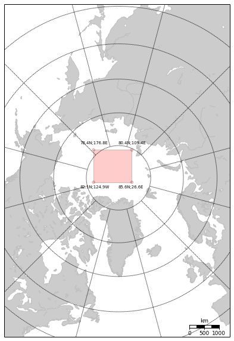

Schematic basemap map with polygons, etc
from pyresample import plot, utils
# Assume we have an area definition file in the same directory
# It is possible to define basemap object from scratch though
area_def = utils.load_area('./areas.cfg', 'nsidc_stere_north_10k')
bmap = plot.area_def2basemap(area_def, resolution='l')
bmap.drawcoastlines(color='#c1c1c1')
bmap.fillcontinents()
bmap.drawmeridians(np.arange(-180, 180, 30))
bmap.drawparallels(np.arange(-90, 90, 10))
bmap.drawmapscale(-15, 40, 0, 70,1000, barstyle='fancy', yoffset=100000)
def draw_screen_poly( x, y, m):
x, y = m( lons, lats )
xy = zip(x,y)
poly = Polygon( xy, facecolor='red', alpha=0.2 )
plt.gca().add_patch(poly)
# Define window size. For now let it be centered around zero coordinates
height=100
width=100
row_LR = np.int(area_def.shape[0]/2.+height/2.)
row_UL = np.int(area_def.shape[0]/2.-height/2.)
col_LR = np.int(area_def.shape[1]/2.+width/2.)
col_UL = np.int(area_def.shape[1]/2.-width/2.)
ll_x, ll_y, ur_x, ur_y = area_def.get_area_extent_for_subset(row_LR,
col_LR,
row_UL,
col_UL)
x_0, y_0 = bmap(0,90)
y = np.array([ ll_y, ur_y, ur_y, ll_y ]) + y_0
x = np.array([ ll_x, ll_x, ur_x, ur_x ]) + x_0
draw_screen_poly( x,y, bmap)
And the output:
